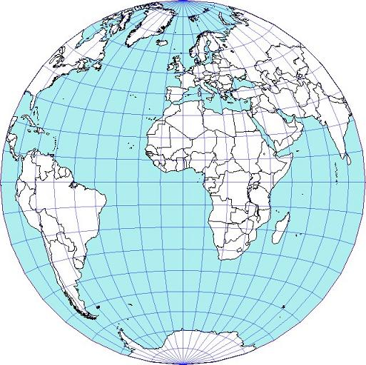

Albers
Behrmann Cylindrical Equal Area (30 degrees)
Gall Cylindrical Equal Area (45 degrees)
Lambert Equal Area Conic
Lambert Cylindrical Equal Area (0 degrees)
Mollweide
Peters Cylindrical Equal Area (44 degrees)
Quartic Authalic
Sinusoidal Equal Area
Trystan Edwards Cylindrical Equal Area (37.4 degrees)
Wagner I